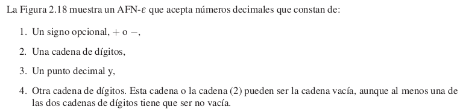
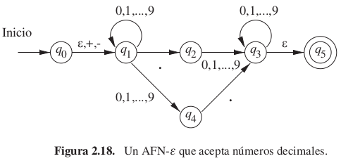
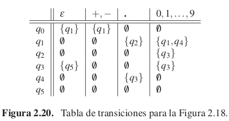
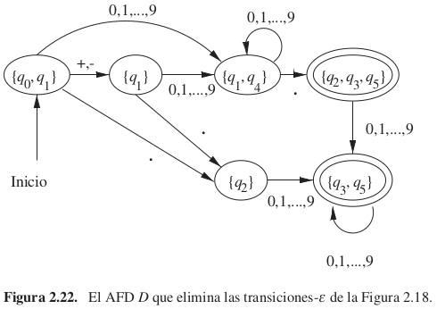
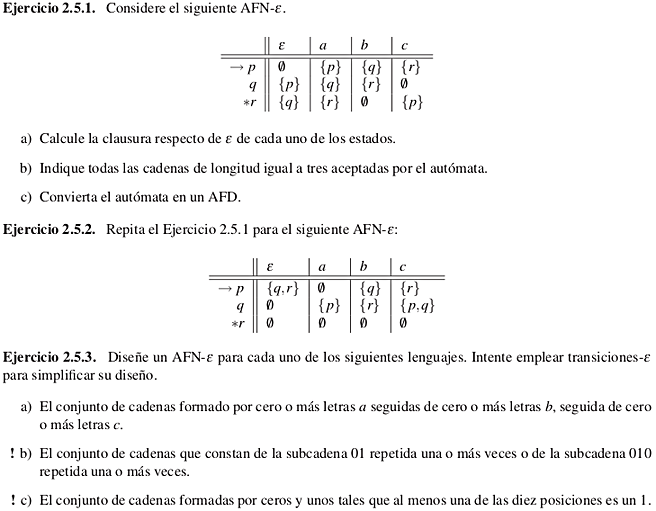

Veamos otra extensión del autómata finito. La nueva característica es que permite transiciones para ε , la cadena vacía. Así, un AFN puede hacer una transición espontáneamente, sin recibir un símbolo de entrada.
Al igual que el no determinismo, esta nueva capacidad no expande la clase de lenguajes que los autómatas finitos pueden aceptar, pero proporciona algunas “facilidades de programación”.



Podemos representar un AFN-ε del mismo modo que representaríamos un AFN con una excepción: la función de transición tiene que incluir la información sobre las transiciones para ε.
La clausura de un estado q respecto de ε, es el conjunto de estados que incluye a q y también a todos los estados accesibles por una o varias transiciones ε desde q.
Notación: CL(q).
En primer lugar, definimos δ′, la función de transición extendida, para reflejar lo que ocurre con una secuencia de entradas. La idea es que δ′(q, w) es el conjunto de estados que puede alcanzarse a lo largo de un camino cuyas etiquetas, cuando se concatenan, forman la cadena w (sin las etiquetas ε).
Sea E = (Q, Σ, δ, q0, F) un AFN-e.
L(E) = {w|δ′(q0, w) ∩ F ≠ ∅}.
El lenguaje de E es el conjunto de cadenas w que llevan del estado inicial a al menos un estado de aceptación.
Parecida a la conversión de AFN a AFD.
Sea E un AFN-e de conjunto de estados Q. Existe un AFD equivalente con:
Se calcula δD(S, a) para todo a perteneciente a Σ y todos los conjuntos S pertenecientes a QD como sigue:

